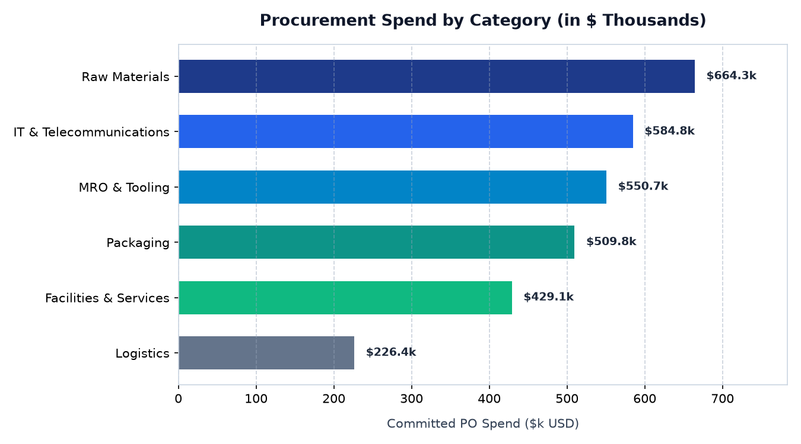
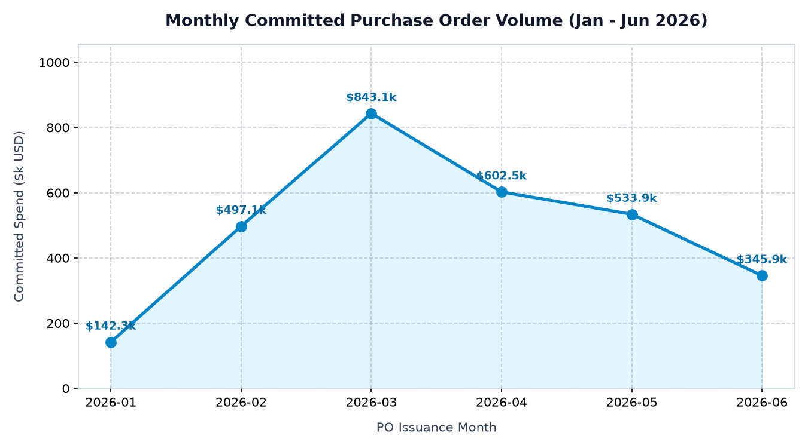
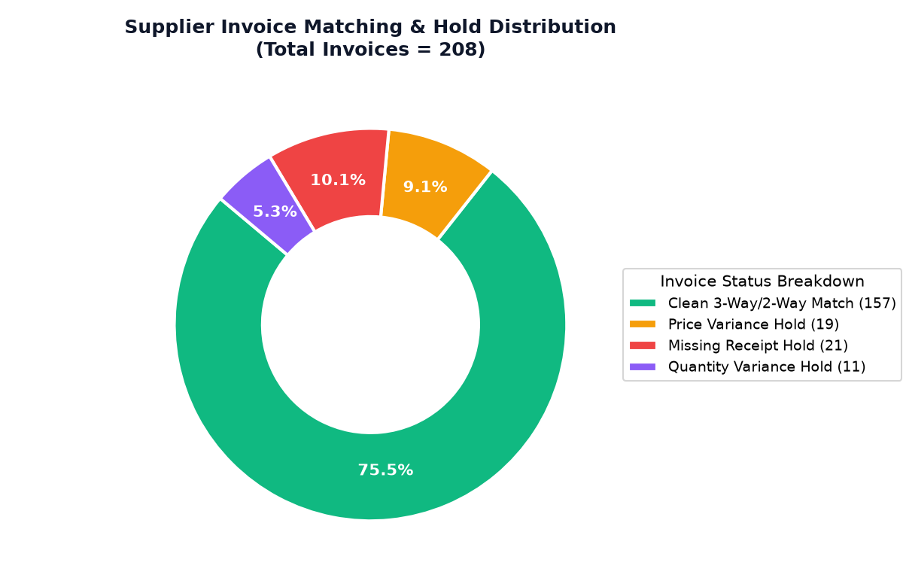
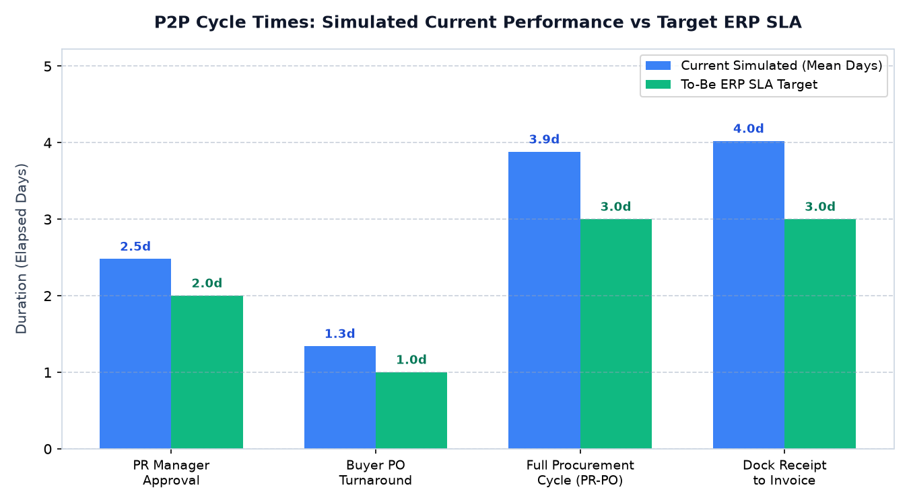

A comprehensive, portfolio-ready business transformation blueprint demonstrating how a mid-sized manufacturing organization modernizes procurement and supplier payments by transitioning from fragmented manual workflows to an integrated, auditable cloud ERP operating model.
223 Purchase Orders issued across 25 approved vendors ($2,964,919.38).
208 Vouchers processed ($2,810,206.58); $2.30M disbursed to date.
51 Invoices on hold (Price variance, Missing receipts, Quantity mismatch).
Average elapsed duration from PR creation to PO dispatch (Target: ≤ 2.0d).
Zero foreign-key orphans; strict referential integrity across all tables.
Northstar Manufacturing Ltd. is a fictional discrete manufacturing enterprise specializing in precision industrial components. Prior to this modernization program, Northstar operated with decentralized purchasing practices characterized by paper requisition forms, unmonitored email approvals, physical dock slips, and manual Accounts Payable cross-checking. These vulnerabilities created rampant maverick spend, an unsustainable invoice exception rate of 24.52%, and delayed vendor payments that strained critical supply chains.
This case study formulates a structured 14-week implementation roadmap to establish a standardized, control-driven Procure-to-Pay lifecycle aligned conceptually with Oracle Fusion Cloud Procurement and Financials. Core architectural pillars include:
| Objective ID | Strategic Business Objective | Current Simulated Baseline | To-Be Target SLA (Assumption) | Verification Method |
|---|---|---|---|---|
| OBJ-01 | Standardize Requisition & Approval Routing | 2.48 days avg latency; loose email chains | ≤ 1.0 business day via automated DoA | BPM approval audit logs |
| OBJ-02 | Compress Total Procurement Cycle Time | 3.88 days from initial PR to PO dispatch | ≤ 2.0 business days for standard catalogue items | Purchasing workbench timestamp audit |
| OBJ-03 | Automate Invoice Matching & Reduce Holds | 24.52% invoice exception holds (51 vouchers) | ≤ 8.0% exception rate via 3-Way match | Accounts Payable hold log review |
| OBJ-04 | Eliminate Maverick & Unmatched Invoices | Frequent unreferenced invoices received | 100% invoices linked to approved PO or SOW | Payables subledger reconciliation |
| OBJ-05 | Consolidated Real-Time Spend Visibility | Manual monthly Excel reconciliations | Real-time interactive executive dashboard | Production dashboard sign-off |
| OBJ-06 | Organizational Change Adoption | Minimal structured training documentation | ≥ 90% certified role competency score | LMS completion & UAT sign-off |
The To-Be operating model establishes a standardized, automated 10-step lifecycle aligned with Oracle Fusion Cloud:
| Step # | Lifecycle Stage | Operating Role | System Activity & Controls | Exception Handling Logic |
|---|---|---|---|---|
| 1 | Requisition Creation | Requisitioner | Raise request in Self-Service Procurement; mandatory cost center & commodity assignment. | Item validation blocks invalid accounting flexfields. |
| 2 | Approval Routing | Dept Mgr / Director / VP | Automated routing based on monetary thresholds (<$5k, $5k-$25k, >$25k). | Rejections require mandatory feedback; 48hr inactivity escalation. |
| 3 | PO Execution | Purchasing Buyer / Auto | Auto-creation against Blanket Purchase Agreements; electronic dispatch to supplier. | Non-catalog items route to buyer workbench for quote review. |
| 4 | Fulfillment | Supplier | Supplier ships goods / delivers services per contracted lead times. | Advanced Shipping Notice (ASN) logging. |
| 5 | Dock Receiving | Receiving Clerk | Log dock receipt against PO lines; record quantity and packaging condition. | Partial deliveries update open balance; damages initiate RMA return. |
| 6 | Invoice Ingestion | Accounts Payable | Electronic capture; mandatory validation against PO number; duplicate check. | Duplicate supplier invoice references blocked immediately. |
| 7 | Automated Match | Payables Match Engine | 3-Way (Goods) and 2-Way (Services) match against configured tolerances (1.5% / $50). | Passed invoices move directly to payment scheduling. |
| 8 | Exception Routing | AP Supervisor / Buyer | Automated hold tagging (Price Variance, Missing Receipt, Quantity Variance). | Price holds alert Buyer; missing receipts alert Warehouse Lead. |
| 9 | Disbursement | Treasury / AP Manager | Automated Payment Process Request (PPR) run; ACH/EFT payment batch authorization. | Segregation of duties enforces secondary managerial sign-off. |
| 10 | Governance & Audit | PMO / Compliance | Immutable audit trail logging; real-time OTBI spend and hold analytics. | Hold aging > 7 days triggers priority executive escalation. |
Visual Flowchart available in diagrams/to-be-process.mmd.
The As-Is baseline suffered from severe manual bottlenecks and lack of central visibility:
Visual Flowchart available in diagrams/as-is-process.mmd.
| Req ID | Requirement Title & Scope | Priority | Process Owner | Proposed Solution (ERP Alignment) | Related Test ID |
|---|---|---|---|---|---|
| BR-01 | Standardized Supplier Master Onboarding | Must Have | Procurement Lead | Centralized vendor master with mandatory Tax ID, bank account, and payment terms validation. | TC-FUNC-01 |
| BR-02 | Self-Service Purchase Requisitioning | Must Have | Operations | Catalog search & expense templates with mandatory cost-center validation. | TC-FUNC-02 |
| BR-03 | Automated Multi-Tier Approval Routing | Must Have | Finance / Controls | Approvals Management Engine routing (<$5k Mgr, $5k-$25k Dir, >$25k VP). | TC-FUNC-03 |
| BR-04 | Requisition Rejection Justification | Should Have | Purchasing | Mandatory rejection comment field with instant requester email notification. | TC-FUNC-05 |
| BR-05 | Automated Purchase Order Creation | Must Have | Purchasing Lead | Auto-conversion of approved PRs into POs against active Blanket Agreements. | TC-FUNC-06 |
| BR-06 | Dock Goods Receipt Intake | Must Have | Warehouse Lead | Digital receiving workbench recording quantity, condition, and dock location. | TC-FUNC-07 |
| BR-07 | Inspection & Partial Delivery Logging | Should Have | Quality Assurance | Support for partial deliveries and RMA return quarantine for damaged items. | TC-FUNC-08 |
| BR-08 | Electronic Invoice Capture & Duplicate Check | Must Have | Accounts Payable | Payables workbench with mandatory PO reference and duplicate voucher check. | TC-FUNC-09 |
| BR-09 | Automated 3-Way Invoice Matching | Must Have | Accounts Payable | Automated PO ↔ Receipt ↔ Invoice line-item match for physical goods. | TC-FUNC-10 |
| BR-10 | Automated 2-Way Service Matching | Must Have | Accounts Payable | Invoice ↔ PO commitment match bypassing dock receipt for services/IT. | TC-FUNC-11 |
| BR-11 | Invoice Matching Tolerance Group | Should Have | Controller | Auto-approve price variances ≤ 1.5% or ≤ $50; hold higher variances. | TC-FUNC-12 |
| BR-12 | Automated Hold Routing & Escalation | Must Have | Accounts Payable | Dedicated worklists for Price, Missing Receipt, and Quantity variance holds. | TC-FUNC-13 |
| BR-13 | Payment Process Request (PPR) Scheduling | Must Have | Treasury Lead | Automated payment batch generation with dual-authorization release. | TC-FUNC-15 |
| BR-14 | Procurement Analytics Dashboard | Should Have | PMO / Finance | Interactive OTBI reporting workbenches for spend, cycle times, and hold rates. | TC-FUNC-16 |
| BR-15 | Segregation of Duties (SoD) & RBAC | Must Have | Internal Audit | Role-based security profiles preventing self-approvals and unauthorized changes. | TC-FUNC-17 |
| BR-16 | Immutable Audit Trail & Logging | Must Have | Compliance Officer | Comprehensive database audit history with user IDs and ISO timestamps. | TC-FUNC-18 |
| BR-17 | Hold Escalation Timers (7-Day SLA) | Could Have | AP Manager | Automated workflow escalation to AP Manager for holds stagnant > 7 days. | TC-FUNC-19 |
| BR-18 | Role-Based Training Curriculum | Should Have | Change Lead | 5 role-tailored training modules with ≥ 90% competency certification gate. | TC-FUNC-20 |
Structured evaluation of operational deficiencies across process, data, control, and training dimensions:
| Gap ID | Category | Current-State Deficiency | Desired Future State | Proposed ERP Resolution | Priority |
|---|---|---|---|---|---|
| GAP-01 | Process | Paper and email requisitions cause rampant maverick spend. | 100% digital self-service procurement intake. | Deploy Self-Service Requisitioning with catalog templates. | High |
| GAP-02 | Control | Unmonitored email approvals; managers approving own requests. | Automated Delegation of Authority with strict thresholds. | Configure AME supervisory hierarchy & SoD rules. | High |
| GAP-03 | Process | Paper dock slips mislaid or filed days after invoices arrive. | Real-time dock goods intake logged upon truck arrival. | Install ruggedized dock terminals with PO lookup. | High |
| GAP-04 | Control | Manual paper invoice matching; clerks approve price hikes. | Automated 3-Way match with configured tolerance limits. | Enable 3-Way match engine with 1.5% / $50 tolerance. | High |
| GAP-05 | Data | Vendor master contains duplicate entries and missing tax IDs. | Clean, deduplicated Supplier Master with active flags. | Execute automated data cleansing sprint prior to cutover. | High |
| GAP-06 | Process | Invoices on hold sit unmonitored for weeks until credit holds. | Automated exception routing and 7-day escalation. | Configure automated hold worklists and escalation alerts. | Medium |
| GAP-07 | Reporting | Month-end spreadsheet chasing for spend and liability totals. | Real-time interactive executive spend dashboard. | Deploy pre-packaged OTBI executive analytics dashboards. | Medium |
| GAP-08 | Training | Warehouse dock workers unfamiliar with cloud ERP software. | 100% operational staff certified on dock receiving tools. | Deliver hands-on dock labs and laminated visual job aids. | High |
| Milestone | Phase Scope | Target Week | Workstream Owner | Exit Criteria Deliverable | Status |
|---|---|---|---|---|---|
| M1 | Project Kickoff & Charter Sign-Off | Week 1 | Executive Sponsor / PMO | Signed Project Charter & Scope Baseline | Completed |
| M2 | Business Requirements & Process Baseline | Week 3 | Business Analyst / PM | 18 Traceable Requirements & Gap Matrix Signed | Completed |
| M3 | Functional Design & CRP-1 Exit | Week 7 | Lead Functional Consultant | Signed FDD & Prototype Demonstration Pass | Completed |
| M4 | System Integration Testing (SIT) Exit | Week 9 | QA Lead / Technical Lead | 100% Cross-Module Integration Scenarios Passed | Completed |
| M5 | User Acceptance Testing (UAT) Sign-Off | Week 11 | QA Lead / Business Leads | 12 Business UAT Scenarios Passed (0 Sev 1/2) | Completed |
| M6 | Mock Cutover 2 & End-User Training Certification | Week 13 | Change Lead / Tech Lead | ≥ 90% Staff Certified; Dress Rehearsal Reconciled | Completed |
| M7 | Production Go-Live Launch | Week 14 | Technical Lead / PMO | 48-Hour Cutover Weekend Passed; Smoke Test Verified | Completed |
| M8 | Hypercare Exit & Governance Handover | Week 16 | PMO / Governance Chair | 14 Days Stable Operations; P2P Council Charter Active | Completed |
RACI Matrix defining Responsible (R), Accountable (A), Consulted (C), and Informed (I) roles:
| Activity ID | Implementation Activity | PM | Procurement | Finance/AP | Consultant | Tech Lead | QA | Change | Sponsor |
|---|---|---|---|---|---|---|---|---|---|
| ACT-01 | Project Charter & Scope Definition | R | C | C | C | I | I | I | A |
| ACT-02 | Requirements Gathering (BRD) | A | C | C | R | I | C | I | C |
| ACT-03 | As-Is & To-Be Process Mapping | A | C | C | R | I | I | I | C |
| ACT-04 | DoA Approval Hierarchy Matrix | C | C | R | C | I | I | I | A |
| ACT-05 | Tolerance & Matching Configuration | I | C | R | R | C | C | I | A |
| ACT-06 | Supplier Master Cleansing | I | C | C | I | R | I | I | A |
| ACT-07 | User Acceptance Testing (UAT) | C | R | R | C | I | C | C | A |
| ACT-08 | End-User Training Delivery | I | C | C | I | I | I | R | A |
| ACT-09 | Weekend Cutover Execution | A | C | C | C | R | C | I | I |
| ACT-10 | Go / No-Go Decision Gate | C | C | C | C | C | C | C | A |
| Risk ID | Category | Risk Description | Likelihood (1-5) | Impact (1-5) | Score (1-25) | Preventative Mitigation | Owner | Status |
|---|---|---|---|---|---|---|---|---|
| RSK-01 | Data Quality | Legacy vendor master contains duplicates and missing tax IDs, corrupting database. | 5 | 4 | 20 (Critical) | Pre-migration automated cleansing scripts; strict tax ID validation gates. | Data SME / AP Lead | In Progress |
| RSK-09 | Cutover Downtime | Data migration and open PO conversion exceeds 48-hour weekend blackout window. | 4 | 5 | 20 (Critical) | Two full mock cutover dry runs (Weeks 10 & 12); strict rollback cutoff at Sunday 18:00. | Technical Lead | In Progress |
| RSK-08 | User Adoption | Warehouse dock clerks resist digital receiving, causing missing receipt holds. | 4 | 4 | 16 (High) | Hands-on dock floor labs; ruggedized touchscreens; 1-page visual desk job aids. | Change Lead | In Progress |
| RSK-03 | Stakeholder Availability | Operational AP and buyer SMEs unavailable for UAT due to daily plant duties. | 4 | 4 | 16 (High) | Executive mandate allocating 30% dedicated SME time; funded AP backfill contractor. | Sponsor (CFO) | Managed |
| RSK-11 | Supplier Resistance | Vendors fail to quote PO numbers on invoices, stalling automated matching. | 3 | 5 | 15 (High) | Vendor enablement letters at T-4 & T-1 weeks; temporary AP exception triage desk. | Procurement Lead | In Progress |
| RSK-02 | Scope Creep | Stakeholders request advanced sourcing RFx and contract modules during Phase 1. | 3 | 4 | 12 (Medium) | Enforce Project Charter scope baseline; formal PMO Change Control Board. | Project Manager | Mitigated |
| RSK-12 | Regulatory Compliance | Failure to retain immutable audit logs of price tolerance overrides violates SOX rules. | 2 | 5 | 10 (Medium) | Database transaction logging; secondary manager sign-off for overrides > $250. | Compliance Officer | Mitigated |
All metrics and charts below are derived deterministically from the synthetic baseline datasets generated by generate_sample_data.py and analyzed via p2p_analysis.py.

Raw Materials represent the largest spend concentration ($1.53M across 98 POs), followed by MRO & Tooling ($612k).

Commitment volumes stabilized between $450k and $550k per month across 6 manufacturing operational periods.

157 invoices matched cleanly (75.48%); 51 vouchers encountered holds (Price variance: 19, Missing receipt: 21, Quantity: 11).

Requisition approval takes 2.48 days (target: 2.0d); overall procurement cycle takes 3.88 days (target: 3.0d).
Search and filter actual simulated invoice vouchers across matching states, payment statuses, and suppliers:
| Voucher ID | PO Number | Supplier Name | Match Type | Billed Amount | Match Status | Hold / Tolerance Reason | Payment Status |
|---|
The quality assurance strategy enforces 100% requirements traceability across Functional Unit Testing (22 test cases) and User Acceptance Testing (12 business scenarios).
| Test Stream | Scope & Target | Total Scenarios | Simulated Status | Open Sev 1/2 Defects | Exit Gate Recommendation |
|---|---|---|---|---|---|
| Functional Testing (FUT) | Discrete field validation, approval thresholds, tolerance boundaries | 22 Test Cases | 100% Passed | 0 Open | Gate Passed |
| Integration Testing (SIT) | End-to-end data passing from PR → PO → Dock → AP → Bank | Core E2E Suite | 100% Passed | 0 Open | Gate Passed |
| User Acceptance (UAT) | Business SME verification of realistic daily manufacturing scenarios | 12 Scenarios | 100% Signed Off | 0 Open | Formally Signed Off |
Note: Because this project is an independent academic study without an active Oracle Cloud tenant, test cases are maintained as simulated catalogue verifications. Complete test suites and defect logs are located in testing/functional-test-cases.csv, testing/uat-test-cases.csv, and testing/defect-log.csv.
To prevent disrupting Monday morning plant manufacturing, cutover executes over a strict 48-hour weekend blackout window (Friday 18:00 to Sunday 18:00):
| Sequence | Window | Cutover Activity | Owner | Verification Gate |
|---|---|---|---|---|
| CK-01 | Fri 18:00 | Convene Cutover Command Center & lock legacy purchasing database to Read-Only. | PMO / IT | Write access confirmed disabled. |
| CK-03 | Fri 19:30 | Extract legacy vendor master and open PO delta balances. | Data Lead | Record count checksum verified. |
| CK-05 | Sat 02:00 | Load cleansed Supplier Master (25 active vendors) into production environment. | Tech Lead | 25 records verified in production. |
| CK-06 | Sat 06:00 | Load open PO balances and verify subledger accruals. | Finance Lead | Zero variance against legacy trial balance. |
| CK-08 | Sat 12:00 | Configure Approval Hierarchy and Invoice Tolerance group (1.5% / $50). | Consultant | Configuration audit export verified. |
| CK-10 | Sat 17:00 | Execute End-to-End Smoke Test (synthetic PR → PO → Approval). | QA Lead | Smoke transaction executed and voided. |
| CK-13 | Sun 14:00 | Steering Committee Final Go-Live Assessment. | Sponsor (CFO) | Unanimous executive authorization. |
| CK-14 | Sun 15:00 | Release production system access to all certified business users. | Security Lead | System online; broadcast notice sent. |
Three-Way Matching is an automated financial internal control that compares three independent documents before approving an invoice for payment:
In Northstar's implementation, 3-Way matching prevents paying for unreceived goods, detects billing overages, and automatically applies holds when price variances exceed 1.5% or $50.
For non-physical commodities (e.g. consulting services, cloud subscriptions, facilities maintenance), there is no physical warehouse dock receipt. Two-Way Matching matches the supplier invoice directly against the approved Purchase Order commitment schedule, eliminating unnecessary receiving clerical steps while maintaining contractual control.
A Delegation of Authority policy defines the financial spending limits assigned to organizational management roles. In Northstar's design:
Hypercare is an intensive, high-support operational transition phase immediately following production cutover (typically 14 to 30 days). A centralized Command Center and on-site floor champions provide rapid defect triage, monitor automated matching holds, and support end-users until steady-state operations are achieved.
Every deliverable referenced in this case study is fully authored and available directly in this repository:
This case study was conceived and engineered as an independent professional portfolio project for entry-level and junior roles across technology consulting, ERP functional advisory, business analysis, and IT project management (PMO).
Candidate Name: [Portfolio Author / Madhav Kumar]
Focus Areas: ERP Business Analysis, Procure-to-Pay (P2P), Requirements Engineering, PMO Governance, Data Analytics
Repository Link: github.com/Madhav70/oracle-erp-p2p-case-study (or local workspace)
Professional Disclaimer: This case study demonstrates project-management and analytical methods, not hands-on experience in a live Oracle ERP production environment.